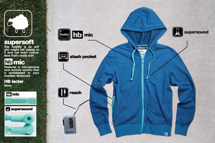

Executives from the smart textile and embedded sensor sectors gathered in London last month for the third edition of the annual Wearable Technology Show. Everything from performance enhancing sportswear to intelligent insoles and jackets that alert workers if they go too close to moving vehicles was on show. Katie Smith takes a closer look at some of the highlight